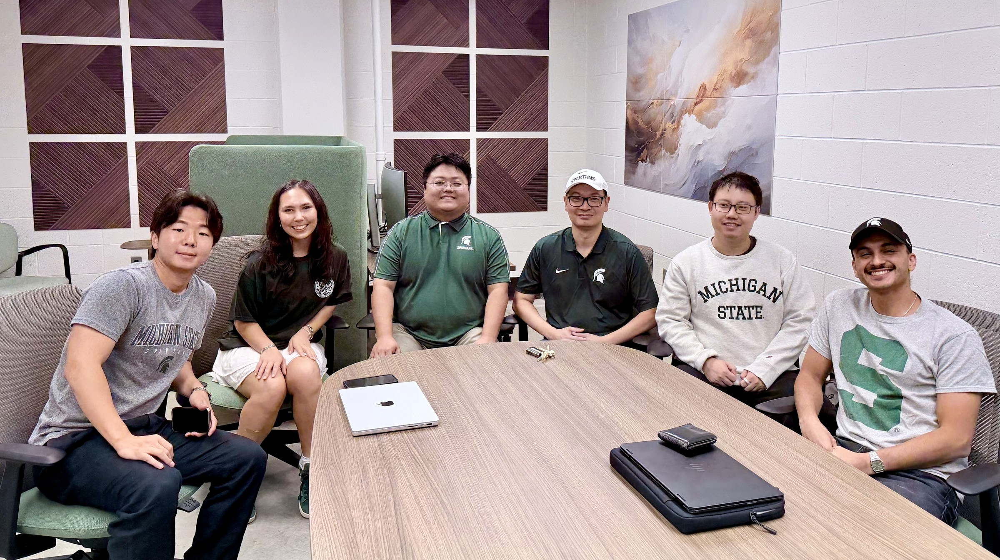

Graduate students
For M.S. or Ph.D. study, check the requirements and deadlines for your program. Submit your application through the MSU Graduate School.

JOIN THE LAB
Explore graduate study, postdoctoral research and undergraduate research at Michigan State University.
The RISE Lab currently has multiple openings. We seek highly motivated and self-driven candidates with a strong interest in science and materials research and a commitment to addressing challenging problems in infrastructure materials. Prior experience with cementitious materials is desirable but not required. Intellectual curiosity, initiative, and a strong work ethic are highly valued.
For M.S. or Ph.D. study, check the requirements and deadlines for your program. Submit your application through the MSU Graduate School.
Browse MSU Careers for posted postdoctoral positions and follow the application instructions in each listing. Email Dr. Jin to ask about postdoctoral research at RISE.
Explore MSU’s undergraduate research resources for opportunities across campus. Email Dr. Jin to ask about undergraduate research projects at RISE.
To ask about research at RISE, send Dr. Jin a brief email with: